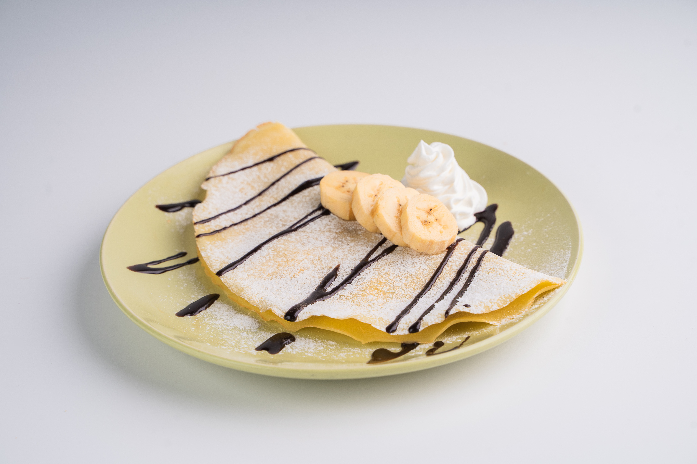
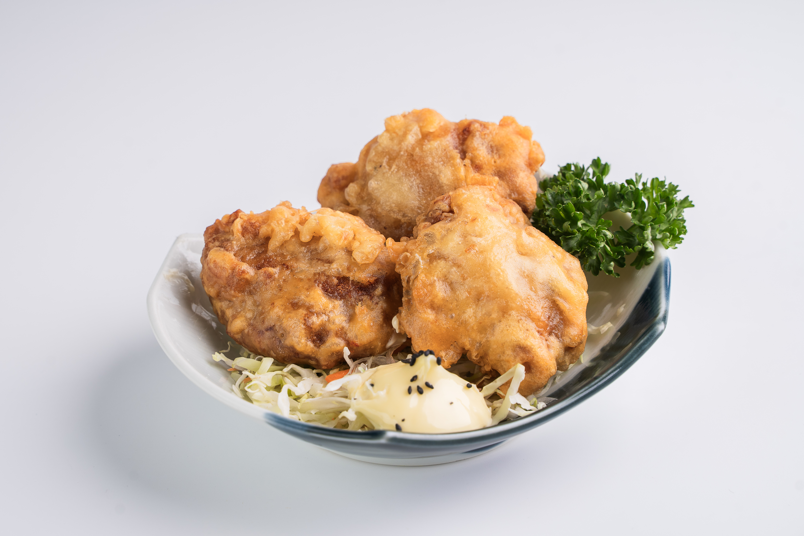
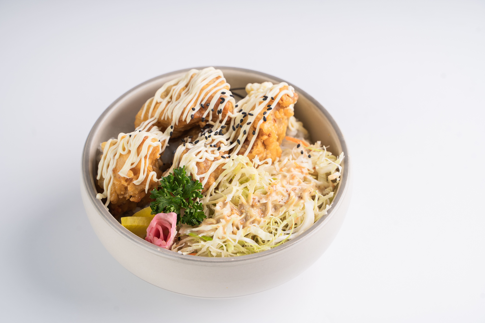
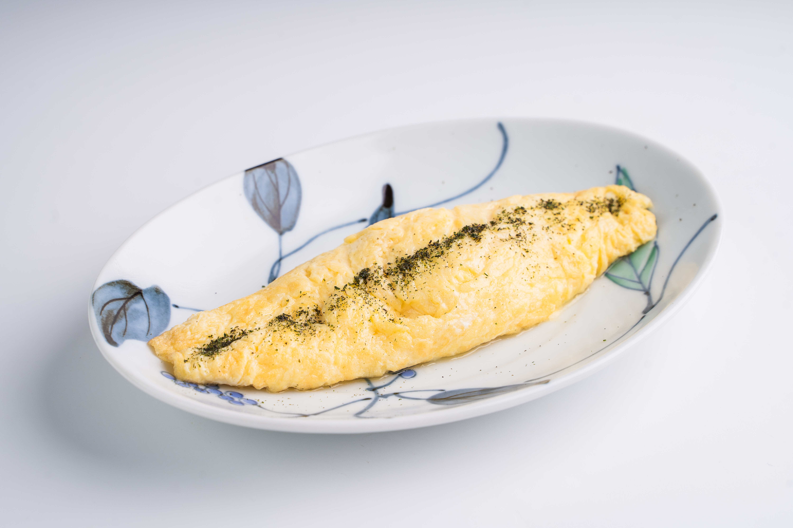

Loading...
Food Menu
Food Menu
Most Popular Items

Butter Honey toast ₱140
Experience the delightful combination of rich butter and sweet honey atop lightly toasted bread with our Butter Honey Toast.
French Toast $150
French toast is a classic breakfast dish made by dipping bread in a mixture of eggs, milk, vanilla, and cinnamon, then frying it until golden brown. Typically served with powdered sugar, maple syrup, and butter, it can also be topped with berries, whipped cream, or nuts.
ShiSho Garlic ₱190
This culinary masterpiece takes traditional garlic bread to new heights with the addition of fragrant Shisho leaves. Freshly minced garlic is infused into a velvety spread, generously slathered onto slices of artisanal bread.

Banana & Chocolate Crepe ₱140
A Banana & Chocolate Crepe is a delightful French-inspired dessert that combines the sweetness of ripe bananas with the rich, indulgent flavor of chocolate. This classic treat starts with a thin, delicate crepe, made from a batter of flour, eggs, milk, and a hint of vanilla, cooked to golden perfection.
Chicken and katsu panini ₱190
This delectable creation begins with tender, juicy chicken breast, lightly breaded and fried to crispy perfection. Nestled between slices of freshly baked bread, the chicken is joined by a layer of savory katsu sauce, adding a touch of sweetness and depth of flavor.
Truffle ₱210
Truffle pasta is a luxurious dish that combines the rich, earthy flavor of truffles with the comforting simplicity of pasta. This gourmet meal typically features a creamy or buttery sauce infused with truffle oil or shavings of fresh truffles, imparting a distinctive aroma and taste.
Creamy bacon with shitake ₱245
Creamy Bacon with Shitake is a delectable dish that combines the rich, savory flavors of crispy bacon and earthy shiitake mushrooms with a luscious, creamy sauce. This comforting recipe starts with sautéing diced bacon until it reaches a perfect crispy texture, infusing the dish with its smoky, salty goodness.

Kara age 3pcs ₱150
Kara-age, a popular Japanese dish, consists of bite-sized pieces of chicken that are marinated, coated, and deep-fried to golden perfection.
Omu rice don ₱160
A delightful fusion dish originating from Japan, seamlessly combines the comforting flavors of fried rice and a fluffy omelette. The name "Omu Rice" is derived from the Japanese pronunciation of "omelette" and "rice."
Omu Rice ₱160
A delightful Japanese comfort dish, Omu Rice combines fluffy fried rice with a thinly cooked omelette wrapping. The rice is often seasoned with vegetables, chicken, or other meats, creating a flavorful base that contrasts beautifully with the lightness of the egg.
Tendon ₱190
Tendon, short for Tempura Donburi, is a beloved Japanese rice bowl dish that features crispy tempura served over a bed of steamed rice. The tempura can include a variety of ingredients such as shrimp, fish, vegetables like sweet potato and bell pepper, or a combination of these.
Gyudon ₱170
Gyudon, meaning "beef bowl" in Japanese, is a popular rice dish topped with thinly sliced beef and caramelized onions simmered in a savory-sweet sauce made from soy sauce, mirin, and sugar.

Crispy Kara Age Don ₱210
A mouthwatering Japanese rice bowl dish, Crispy Kara Age Don showcases bite-sized pieces of marinated and deep-fried chicken (karaage) served atop a mound of steamed rice.
Curry Katsudon ₱170
A delightful fusion of Japanese and Indian cuisines, Curry Katsudon combines the crispy goodness of a breaded and fried cutlet (chicken, pork, or fish) with the aromatic flavors of Japanese curry.
Chicken/Pork/Fish Katsudon ₱170
A quintessential Japanese comfort food, Katsudon features a crispy breaded cutlet (chicken, pork, or fish) served on a bed of steamed rice and topped with a sweet and savory sauce, soft-cooked onions, and a lightly beaten egg.

Plain Omelette ₱110
Simple yet satisfying, a Plain Omelette is a classic dish made from beaten eggs seasoned with salt and pepper, then gently cooked until fluffy and set. It can be enjoyed on its own or filled with various ingredients such as cheese, ham, vegetables, or herbs for added flavor and texture.
Pasta Platter ₱450
A selection of pasta dishes served together, offering a variety of flavors and textures. This could include classics like spaghetti carbonara, fettuccine alfredo, or penne arrabbiata, each prepared with its own unique sauce and ingredients.
Creamy Bacon With Shitake Platter ₱560
A savory dish featuring creamy pasta with crispy bacon and tender shiitake mushrooms. The creamy sauce is typically made with heavy cream, garlic, and Parmesan cheese, creating a rich and indulgent flavor profile.
Tonkatsu Platter 560
A Japanese dish consisting of breaded and deep-fried pork cutlets served with shredded cabbage, rice, and tonkatsu sauce—a tangy, slightly sweet condiment made from Worcestershire sauce, soy sauce, and other seasonings.
Tempura Platter ₱725
A selection of lightly battered and deep-fried seafood and vegetables, such as shrimp, fish, sweet potato, and bell pepper. Tempura is typically served with a dipping sauce made from dashi, soy sauce, and mirin.
Panini Platter ₱340
A variety of panini sandwiches served together, featuring grilled bread filled with a combination of meats, cheeses, vegetables, and spreads. Panini options may include classic combinations like ham and cheese, turkey and avocado, or caprese.
Kani Salad Platter ₱450
A refreshing salad made with imitation crab (kani), shredded cabbage, cucumber, and other vegetables, tossed in a creamy dressing typically made with mayonnaise, vinegar, and sugar. Kani salad is a popular appetizer in Japanese cuisine.
Mix tempura Platter ₱725
Similar to a regular tempura platter, but with a mix of different seafood and vegetables. This allows for a variety of flavors and textures in each bite, offering a satisfying and diverse dining experience.